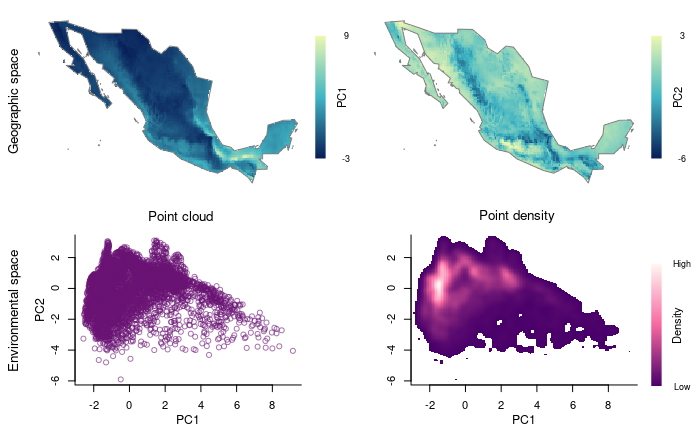

biosurvey: Preparing data
Claudia Nunez-Penichet, Marlon E. Cobos, Jorge Soberon, Tomer Gueta, Narayani Barve, Vijay Barve, Adolfo G. Navarro-Siguenza, A. Townsend Peterson
Source:vignettes/biosurvey_preparing_data.Rmd
biosurvey_preparing_data.Rmd
Description of data needed for analysis
The main goal of biosurvey is to help users to identify sites for biodiversity inventory. This package contains tools that use environmental and geographic information to promote the selection of sites that could allow a better sampling of species in a region. The data needed to perform analyses are:
-
Environmental variables.- These variables must be in raster format (e.g., GTiff, BIL, ASCII). To load these variables to your R environment, you can use the function
stackfrom the packageraster. -
Region of interest.- As your analyses will be focused on a region, a spatial polygon of such an area is needed. Common formats in which your polygon can be are Shapefile, GeoPackage, GeoJSON, etc. To load this information to your R environment you can use the function
readOGRfrom thergdalpackage.
Additionally, other data can be used to make sampling site selection more effective. The functions that help to prepare the data for analysis also allow users to include:
- Sites selected a priori.- A data.frame of sites that researchers consider important to be included in any set of localities to be sampled. These site(s) will be included (by force) in any of the results obtained in later analyses. Using these sites represents a good opportunity to consider areas that are well known and should be included to monitor biodiversity changes in a region.
- A mask to restrict analyses to smaller areas.- A spatial polygon that reduces the region of interest to areas that are considered to be more relevant for analysis can be considered. Some examples of how to define these masks include areas with natural vegetation, areas that are accessible, regions with particular vegetation cover types, etc. This mask is usually in the same format that the Region of interest.
If enough, good-quality data on species distributions are available, analyses of the effectiveness of sampling sites can be performed. The data used to prepare information to perform such analyses can be of different types:
- Spatial polygons of species distributions
- Raster layers defining suitable and unsuitable areas
- Geographic points of species occurrences
The geographic projection of objects or coordinates involved in analyses must be WGS84 (EPSG:4326). Environmental and geographic information is all what is needed to select biodiversity survey sites (sampling sites). Information about species distribution is not required, but if it exists and is reliable, it can be used to test the effectiveness of the sampling sites selected based on what is known about species richness in the region of interest.
Example of how to prepare the data
Preparing an object that contains all information needed
The following lines of code help to prepare an S3 object (master_matrix) that will serve as the base to perform all further analyses. This object will contain: 1) data_matrix, with information about geographic location of raster cells, initial environmental data, and principal components derived from original data (PCs are optional); 2) an optional set of preselected_sites; 3) a spatial polygon representing the region of interest; 4) an optional mask to reduce the region of interest (to restrict it to natural areas, for instance); 5) a spatial object that serves as a raster_base to be used for plotting purposes; and 6) the PCA_results, if such analysis was used when constructing the master_matrix.
# Data
data("mx", package = "biosurvey")
variables <- raster::stack(system.file("extdata/variables.tif",
package = "biosurvey"))
names(variables) <- c("Mean_temperature", "Max_temperature", "Min_temperature",
"Annual_precipitation", "Prec_wettest_month",
"Prec_driest_month" )
# Create master matrix object
m_matrix <- prepare_master_matrix(region = mx, variables = variables,
do_pca = TRUE, center = TRUE, scale = TRUE)
#> Processing raster layers, please wait...
#> Performing PCA analysis
summary(m_matrix)
#>
#> Summary of a master_matrix object
#> ---------------------------------------------------------------------------
#>
#> Data matrix summary:
#> Longitude Latitude Mean_temperature Max_temperature
#> Min. :-116.92 Min. :14.58 Min. : 85.0 Min. :180
#> 1st Qu.:-106.79 1st Qu.:19.92 1st Qu.:174.0 1st Qu.:309
#> Median :-102.58 Median :24.25 Median :203.0 Median :335
#> Mean :-102.52 Mean :23.95 Mean :203.6 Mean :330
#> 3rd Qu.: -98.75 3rd Qu.:27.92 3rd Qu.:236.0 3rd Qu.:354
#> Max. : -86.92 Max. :32.58 Max. :291.0 Max. :425
#> Min_temperature Annual_precipitation Prec_wettest_month Prec_driest_month
#> Min. :-60.00 Min. : 53.0 Min. : 9.0 Min. : 0.00
#> 1st Qu.: 30.00 1st Qu.: 352.0 1st Qu.: 78.0 1st Qu.: 3.00
#> Median : 60.00 Median : 619.0 Median :144.5 Median : 6.00
#> Mean : 70.66 Mean : 768.8 Mean :164.7 Mean : 10.67
#> 3rd Qu.:112.00 3rd Qu.:1046.2 3rd Qu.:224.0 3rd Qu.: 12.00
#> Max. :213.00 Max. :4103.0 Max. :750.0 Max. :140.00
#> PC1 PC2
#> Min. :-2.5770 Min. :-5.9018
#> 1st Qu.:-1.3957 1st Qu.:-0.7861
#> Median :-0.6003 Median : 0.1946
#> Mean : 0.0000 Mean : 0.0000
#> 3rd Qu.: 1.0825 3rd Qu.: 0.9541
#> Max. : 9.1506 Max. : 3.1070
#>
#>
#> No preselected sites were defined
#>
#>
#> Region of interest:
#> class : SpatialPolygonsDataFrame
#> features : 1
#> extent : -118.4042, -86.7014, 14.55055, 32.71846 (xmin, xmax, ymin, ymax)
#> crs : +proj=longlat +datum=WGS84 +no_defs
#> variables : 11
#> names : FIPS, ISO2, ISO3, UN, NAME, AREA, POP2005, REGION, SUBREGION, LON, LAT
#> value : MX, MX, MEX, 484, Mexico, 190869, 104266392, 19, 13, -102.535, 23.951If you want to define points that need to be included in the final selection of sites to be sampled, you can do it by adding them as a data.frame in one of the arguments of the function prepare_master_matrix. See below:
# preselected site example
data("preselected", package = "biosurvey")
# Create master matrix object
m_matrix_pre <- prepare_master_matrix(region = mx, variables = variables,
preselected_sites = preselected,
do_pca = TRUE, center = TRUE, scale = TRUE)
#> Processing raster layers, please wait...
#> Performing PCA analysis
summary(m_matrix_pre)
#>
#> Summary of a master_matrix object
#> ---------------------------------------------------------------------------
#>
#> Data matrix summary:
#> Longitude Latitude Mean_temperature Max_temperature
#> Min. :-116.92 Min. :14.58 Min. : 85.0 Min. :180
#> 1st Qu.:-106.79 1st Qu.:19.92 1st Qu.:174.0 1st Qu.:309
#> Median :-102.58 Median :24.25 Median :203.0 Median :335
#> Mean :-102.52 Mean :23.95 Mean :203.6 Mean :330
#> 3rd Qu.: -98.75 3rd Qu.:27.92 3rd Qu.:236.0 3rd Qu.:354
#> Max. : -86.92 Max. :32.58 Max. :291.0 Max. :425
#> Min_temperature Annual_precipitation Prec_wettest_month Prec_driest_month
#> Min. :-60.00 Min. : 53.0 Min. : 9.0 Min. : 0.00
#> 1st Qu.: 30.00 1st Qu.: 352.0 1st Qu.: 78.0 1st Qu.: 3.00
#> Median : 60.00 Median : 619.0 Median :144.5 Median : 6.00
#> Mean : 70.66 Mean : 768.8 Mean :164.7 Mean : 10.67
#> 3rd Qu.:112.00 3rd Qu.:1046.2 3rd Qu.:224.0 3rd Qu.: 12.00
#> Max. :213.00 Max. :4103.0 Max. :750.0 Max. :140.00
#> PC1 PC2
#> Min. :-2.5770 Min. :-5.9018
#> 1st Qu.:-1.3957 1st Qu.:-0.7861
#> Median :-0.6003 Median : 0.1946
#> Mean : 0.0000 Mean : 0.0000
#> 3rd Qu.: 1.0825 3rd Qu.: 0.9541
#> Max. : 9.1506 Max. : 3.1070
#>
#>
#> Sites preselected by user:
#> Site Longitude Latitude
#> 1 Chamela -105.04479 19.50090
#> 2 Los Tuxtlas -95.07419 18.58489
#> 3 Chajul -90.94067 16.17000
#> 4 Parque de Tlalpan -99.19778 19.29139
#> 5 Parque Chipinque -100.35940 25.61750
#>
#>
#> Region of interest:
#> class : SpatialPolygonsDataFrame
#> features : 1
#> extent : -118.4042, -86.7014, 14.55055, 32.71846 (xmin, xmax, ymin, ymax)
#> crs : +proj=longlat +datum=WGS84 +no_defs
#> variables : 11
#> names : FIPS, ISO2, ISO3, UN, NAME, AREA, POP2005, REGION, SUBREGION, LON, LAT
#> value : MX, MX, MEX, 484, Mexico, 190869, 104266392, 19, 13, -102.535, 23.951Exploring your data in environmental and geographic spaces
The data can be explored by creating four-panel plots using two environmental variables (at a time). The two top panels contain the information in geographic space (one predictor per panel). The two panels at the bottom contain information in a 2D environmental space for the two variables.
# Plot using environmental variables
explore_data_EG(m_matrix, variable_1 = "Mean_temperature",
variable_2 = "Annual_precipitation")
Now let’s use the principal components that summarize most of the variance in your variables.
# Plot using Principal Components resulted
explore_data_EG(m_matrix, variable_1 = "PC1", variable_2 = "PC2")
Partitioning environmental space to achieve uniformity in selections
Block-like partitioning of environmental space. Here, a two-dimensional cloud of points will be blocked according to a user-defined number of rows and columns. These will allow us to see the environmental space more uniformly.
# Creating blocks
m_blocks <- make_blocks(m_matrix, variable_1 = "PC1",
variable_2 = "PC2", n_cols = 10, n_rows = 10,
block_type = "equal_area")
unique(m_blocks$data_matrix$Block)
#> [1] 7 9 32 6 31 10 5 8 30 4 29 28 3 42 27 41 40 39 26
#> [20] 43 38 52 25 51 37 36 53 50 62 61 73 71 72 63 49 59 60 48
#> [39] 70 64 58 81 80 91 47 68 35 54 24 2 23 82 74 83 92 93 84
#> [58] 69 102 103 94 104 114 113 65Let’s check how the blocked environment looks like in environmental and geographic spaces.
# plotting all blocks
plot_blocks_EG(master = m_blocks, block_ID = TRUE)